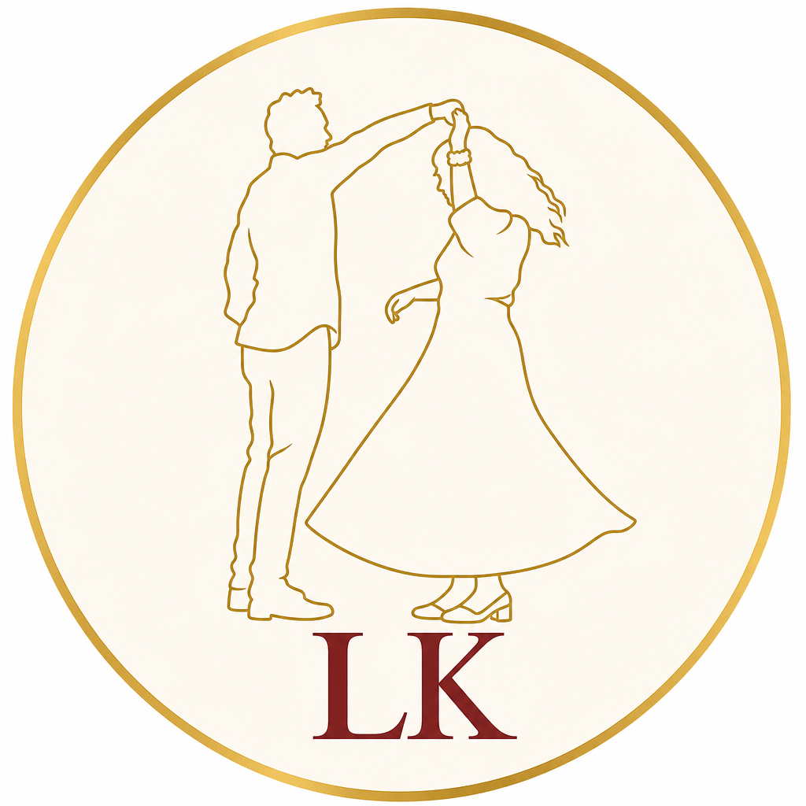
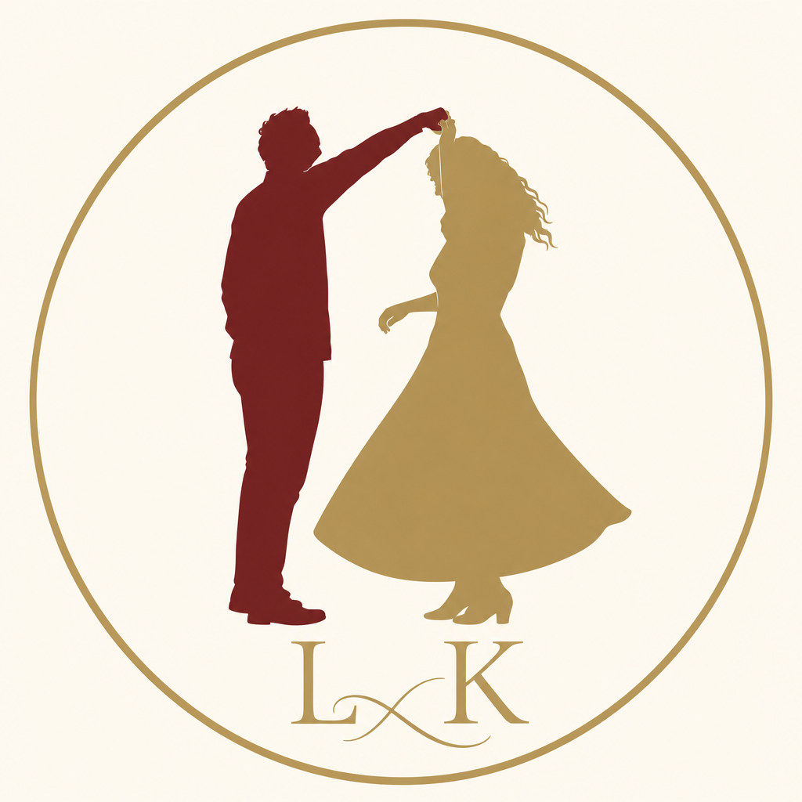
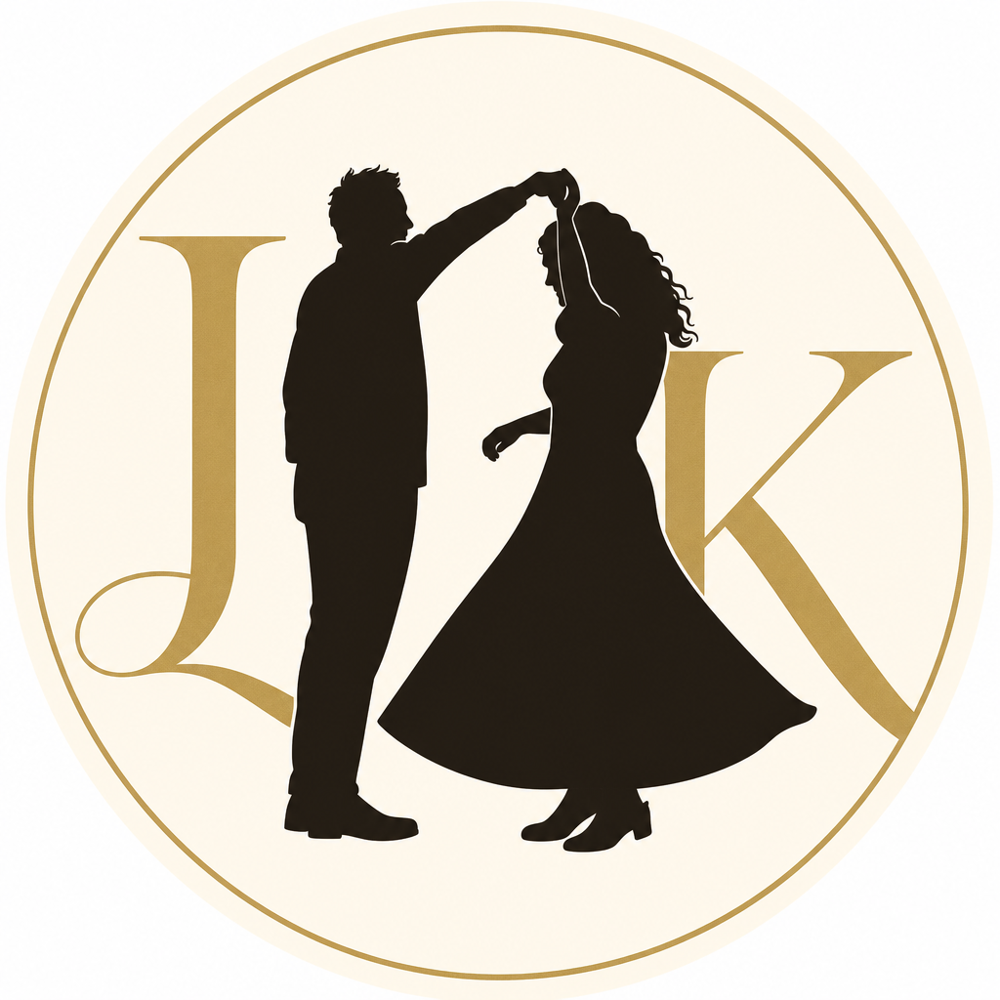
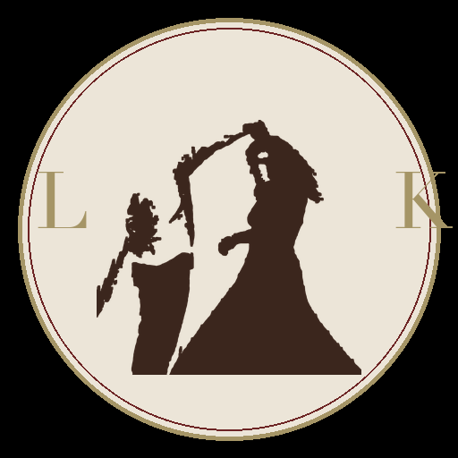
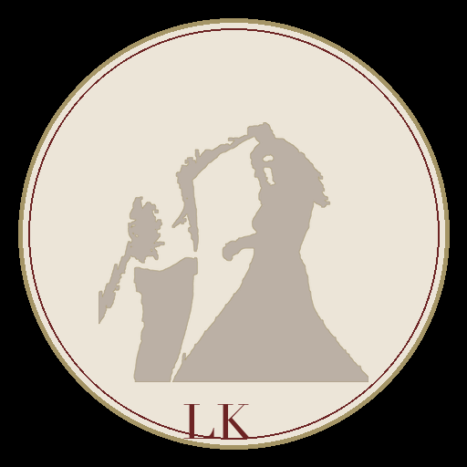
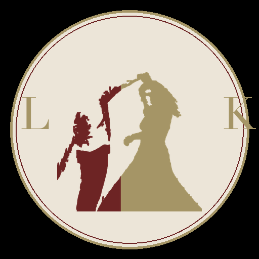

Option A
Clean silhouette · both figures clear · L & K flanking
Each option shows both bride and groom from your dance photo. Pick a favorite and we’ll set it as the site logo.
Clean silhouette · both figures clear · L & K flanking
Gold line-art outline · airy · LK below

Two-tone · groom maroon · bride gold · LK monogram

Bold dark silhouette · L & K behind figures

Direct trace from your photo · maroon silhouette

Gold outline trace · subtle fill · LK below

Photo trace · groom maroon / bride gold split
